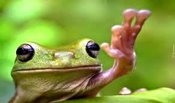

Słowo od żab z lokalnego stawu:
Ribbit ribbit ribbit ribbit ribbit
ribbit ribbit ribbit ribbit ribbit ribbit ribbit...

...ribbit ribbit ribbit ribbit ribbit
ribbit ribbit ribbit ribbit ribbit ribbit ribbit ribbit ribbit ribbit
ribbit ribbit ribbit ribbit ribbit ribbit
ribbit ribbit ribbit ribbit ribbit ribbit ribbit.
3 fakty o żabach.
1. Goliat Płochliwy to nazwa największego płaza bezogonowego na świecie. Występuje w północno-zachodniej części Kamerunu oraz w Gwinei Równikowej. Długość ciała dorosłego osobnika może przekraczać 30cm, a waga może sięgać nawet 3 kilogramów.
2. Szklana Żabka występuje przede wszystkim na terenie Ameryki Środkowej i w Kolumbii. Te niewielkie płazy odznaczają się przezroczystą skórą i tkanką mięśniową, co pozwala dosłownie zajrzeć do jej wnętrza. Dzięki temu można obserwować jej wewnętrzne narządy.
3. Większość żab odżywia się wyłącznie niewielkimi owadami, ślimakami i pajęczakami. W przypadku większych gatunków dieta zawiera również niewielkie ssaki. Przykładem może być żaba rogata, która bardzo chętnie poluje na myszy oraz ryby. W jej diecie znajdują się również pisklęta.